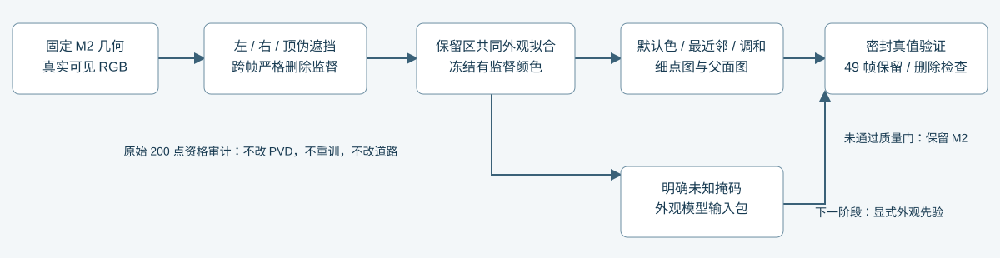
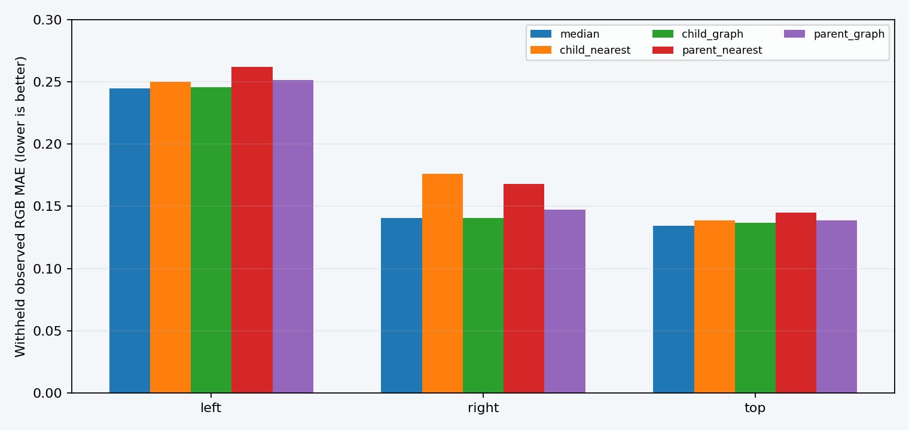

2026-11-05 · 车辆分支 · 几何固定 · 未训练 PVD颜色能沿 PVD 车身传播好吗？
本轮结论：四种颜色延拓候选均未通过质量门，当前 M2 保留。把原本可见的车身分别从左、右、顶部遮掉，所有方法使用同一份剩余观测拟合。外观误差没有稳定优于统一中位色。增加表面连通性扩大了能传播颜色的范围，却没有提高恢复正确性。
49 帧成像检查中，几何、透明度、深度、分组贡献均逐位不变，已有车身、道路与其他车辆的均值保护门全部通过。这说明可以做到不破坏现有监督，但“能安全改色”仍不等于“补出了正确材质”。没有把这些候选接管正式场景。

统一对照结果
主指标是在 9 个内部留出时刻，对被人为遮去且原本真实可见的区域计算 RGB MAE；left/right/top 三种情况等权平均，越低越好。所有不可达区域仍保留在分母中。
| 规则 | 留出区 MAE ↓ | 相对默认色的改善 ↑ | 真实缺测点可延拓数 | 颜色质量门 | 49 帧保护门 |
|---|
| 默认中位色 | 0.17327 | +0.00000 | 0/10,557 | 参照 | 通过 |
| 细点最近邻 | 0.18827 | -0.01500 | 1,662/10,557 | 未通过 | 通过 |
| 细点调和 | 0.17429 | -0.00102 | 1,662/10,557 | 未通过 | 通过 |
| 父面最近邻 | 0.19157 | -0.01830 | 3,321/10,557 | 未通过 | 通过 |
| 父面调和 | 0.17919 | -0.00592 | 3,321/10,557 | 未通过 | 通过 |
“最近邻”是同一表面图上的测地最近邻。调和与最近邻比较的是传播规则；父面与细点比较的是离散尺度及邻接构造。父面规则使用更粗的几何间距，不能称其物理邻域或拓扑保证与细点完全相同。默认色是参照，不参与“优于自身”的通过判定。

查看伪遮挡后的完整车身
第一列橙色轮廓标出用于评价的已知区域。
为什么这项验证没有偷看答案
- 遮挡区域只由车体坐标和 BUILD 中的几何投影贡献决定，不用 RGB 定义区域。
- 任何像素只要含有隐藏点的一丁点非零贡献，就从全部训练帧中移除；没有贡献阈值豁免。
- 每种遮挡重新用剩余原始 RGB 计算中位色与初值，只拟合一份共同颜色。没有使用已拟合 M2、原有 prior 或 native 预测填入被遮答案。
- 延拓只接收有训练贡献点的颜色，只能修改严格零列。导出重载后训练预测仍逐位一致。
- 评价使用同一批固定像素，混合边界另报，不删掉图上不可达的难例。
| 情况 | 保留训练像素 | BUILD 遮去评价像素 | HELD 遮去评价像素 | 样本数量门 |
|---|
| left | 18,710 | 6,279 | 1,341 | INFORMATIVE |
| right | 17,885 | 6,095 | 1,281 | INFORMATIVE |
| top | 16,822 | 5,197 | 1,175 | INFORMATIVE |
数值验收门来自独立审查，在正式 2000 步拟合及任何质量分数读取之前冻结；其时已完成仅检查工程接线的 32 步 smoke，时间边界如实记入 评价合同。本轮是同场景、固定形状的材质控制，不是隐藏几何或跨场景泛化实验。
真实缺测区与街景接入
raw113
这里保留原 M2 的所有有监督颜色，只修改其 10,557 个零 RGB 列。该图没有隐藏车身真值，不能用主观显得更丰富或传播点更多来认定恢复准确。
输入点资格：未发现大规模错归属
原 200 个点全部能精确对应真实 LiDAR 来源行。逐点检查未发现落入其他标注车辆实体盒的点；按固定 5cm 邻域、至少 3 个不同时刻和至少 0.5 秒跨度的几何自洽规则，199 个通过，1 个仍不确定。排除原有 14 个 HELD 来源点后，未来干净准入为 185 个。新建的 5,399 个候选点保留来源与拒绝理由，全部仍标为语义未知；几何自洽不是逐点语义真值。
这轮没有把它们重新送进 PVD，避免把几何输入变化混入颜色实验。完整审计 · 统一准入合同。
下一阶段的外观输入接口已经整理
独立条件包：真实缺测 full · 伪遮挡 left · 伪遮挡 right · 伪遮挡 top。每个包仅含本条件的 40 个 BUILD 视图、自己的合同与公共几何，不含其他条件的 RGB。这里是同一批 40 个 FRONT 时刻在四种掩码下的输入，不是 160 个独立观察角度。
包内提供真实已知 RGB、显式未知掩码、相机、车姿及固定几何提案，没有 HELD RGB、被遮答案或 M2 已拟合纹理。RGBA 透明处表示未知；NPZ float32 RGB 为权威数据，PNG 仅为量化预览。另存裁剪后内参、米制 object-to-camera 和 meter_to_model；形状覆盖与深度明确标为先验预测，不能当作实测真值。
这使下一步可以在同一份固定基准上接入显式外观先验，先检验预训练推理是否改善，再判断是否需要后训练。当前结果不支持继续调图邻域来声称补出了尾灯、车牌或轮胎纹理，也不支持把颜色问题归因于只输出 XYZ 的 PVD 权重。
统一验收判定 · 比较表 · 伪遮挡指标 · 49 帧固定域指标 · 外观条件合同 · 伪遮挡重放资产与独立评价标签
独立审查：评价与泄漏 · 最终实现 · 外观输入包。候选资产均仅供复现：median · child_nearest · child_graph · parent_nearest · parent_graph ·
6000 个正式数值颜色优化步骤；额外 96 步 smoke 与 6 次 next-step 重放单列。未训练神经网络，未更改 PVD、几何、道路或原始检查点；AutoDL 保持开机。